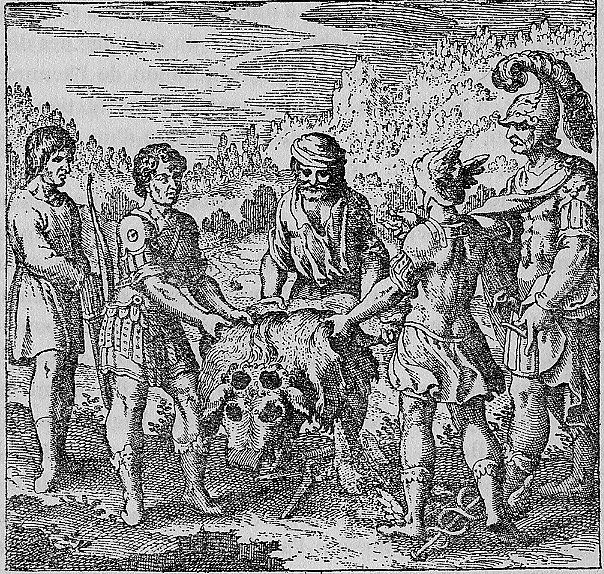

The Philosophical Childacknowledges threefathers, just as Orion.
‘Wornen who givethemselves tovariousmen rarely conceivealiving child, and that isonaccountof the different spermsbeingmixed; for Naturedoes nottolerateabundancein the procreationof mostof the animals and of man, except insome cases. Thus, some-times morethanonechild may springfromonepair of parents, aswelearn from the storyof the countess Margaretha, the wifeof Count Hermanof Henneberg; in 1276 thiswoman producedthreehundred andsixty—five childrenat onego, and all the boysamongthem were christened John and all the girls Elizabeth, and‘after theirdeath they were buriedin the churchof Loosduinen, which isamile from The Haguenear the seain Holl and. Near thegraveis ‘“The sameas Bernardof Treads’-allegory."5M. Maier, Symbola A mane Mezzsae, p. I 56. an inscription, onwhichthecauseof thislargenumberof childrenis mentioned. Thecountesshad onceseen apoor woman with twochildren in her armsandhad calledthewoman anadulteress, because, in her opinion, it was impossibletoproducetwochildren, whenonebecomespregnant byonemanonly and that therefore that woman must have beenimpregnatedbytwomen. Thepoorwoman, whoknewshe was innocentof adultery, cursed the countess with the words that shewouldget asmany childrenas there were daysin ayear, and thatthiswouldhappen inoneconception fromoneman. Thismaybe calledamiracle, but theevent isfoundedin Nature, because t his takes its origin fromdivine vengeance. In the Philosophicalwork whatis againstnaturebecomeseasily admissibleinanallegorical shape. It...
Emblem XLIX bears the motto: "The Philosophical Childacknowledges threefathers, just as Orion."
‘Wornen who givethemselves tovariousmen rarely conceivealiving child, and that isonaccountof the different spermsbeingmixed; for Naturedoes nottolerateabundancein the procreationof mostof the animals and of man, except insome cases.
De Jong's source-critical analysis identifies the textual traditions Maier draws upon for this emblem.
The discourse draws on alchemical sources: Lullius tradition (via Harmonica Chemica), Robertus Vallensis, De Veritate et Antiquitate Artis Chemicae. The discourse draws on classical sources: Ovid, Metamorphoses X.560-704.
H.M.E. de Jong: Source: No directsourcefound. This | Maieruses thelegendabout Orion’sbirth inorder todepictthethreefoldorigin of the Philosophers’ St one. Ascanbe seen from the Arcana Arcarrissiwna, t his fat her is Hermes Trismegistus and the motherof the St one isthreefold: .....
Source: No directsourcefound. This | Maieruses thelegendabout Orion’sbirth inorder todepictthethreefoldorigin of the Philosophers’ St one. Ascanbe seen from the Arcana Arcarrissiwna, t his fat her is Hermes Trismegistus and the motherof the St one isthreefold: ..... I saw threefacesin onefat her; thus Rosariussays that the matterof the Philosophers’St one consistsof fluid, and thattheliquid of those threeisunderstood by t his, as Hortulanusshows; andthereshould notbe morenor less. And hesays that inthesethree Sol is the man, Luna the Woman and Mercury the sperm".1 So, Sol, Luna and Mercury arethethree maincomponents of the St one. In the discourse, Maierquotes two pronouncementsof Lullius, in which the latter speaksof“twofathers and twomothers”, which refersto the four elements asorigin of...